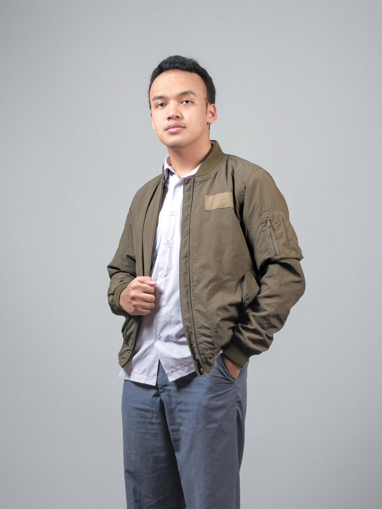

UTS-1 – Komunikasi Interpersonal dan Publik
Saya Ahmad Rizal Fahmi, mahasiswa tingkat dua di Program Studi Sistem dan Teknologi Informasi, Institut Teknologi Bandung. Sejak kecil saya selalu tertarik dengan bagaimana teknologi bisa mengubah cara manusia berpikir, berbisnis, dan berinteraksi. Saya lahir di Pasuruan pada 22 Februari 2006. Kata orang rumah, saya lahir pas adzan Subuh, jadi katanya waktu itu “lahirnya disambut dan diadzanin oleh satu kota”. Entah benar atau cuma bumbu keluarga, tapi kedengarannya cukup keren buat diceritain, kan? Walau lahir di Pasuruan, sejak kecil saya tumbuh dan sekolah di tanah Sunda, tepatnya di Bandung. Kadang kalau ada yang nanya “asli mana?”, saya suka bingung sendiri dan akhirnya saya jawab “saya orang Islam”. Mungkin ini bentuk kecil dari krisis identitas versi saya.
Sebagai anak bungsu, saya sering dibilang pembawa harapan besar keluarga. Katanya sih, anak terakhir harus bisa jadi “penyempurna”. Tekanan itu ada, tapi saya lebih suka melihatnya sebagai dorongan buat terus berkembang. Saya orang yang realistis, nggak terlalu suka muluk-muluk, dan lebih memilih fokus pada apa yang bisa saya kerjakan hari ini. Saya juga senang mencoba hal baru, apalagi kalau bisa belajar langsung dari pengalaman. Dalam tim, saya berusaha jadi rekan yang bisa diandalkan, bukan yang paling hebat, tapi yang paling bisa dipercaya. Hidup bagi saya bukan soal siapa yang paling cepat, tapi siapa yang mau terus berjalan dengan arah yang benar. Karena di akhir hari, setiap langkah kecil tetap berarti kalau kita tahu mau ke mana.